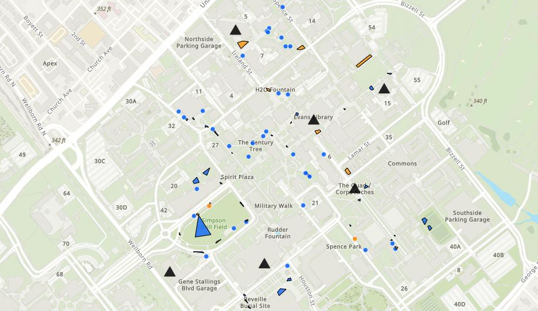
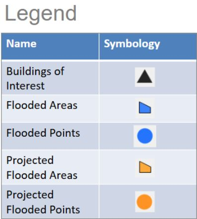

Geographic Information Science & Technology (GIST) Student at Texas A&M University
GIST major with a Minor in Geology at Texas A&M University (Expected December 2026), first-generation college student, Regents' Scholarship Recipient, and Dean's List honoree. Technical background spans GIS analysis, remote sensing, and programming.
Problem
Recurring stormwater flooding events across Texas A&M University campus create hazardous conditions and impassable pedestrian routes for students and faculty traveling between academic facilities.
What I Did
Conducted field surveys using ArcGIS Field Maps on mobile devices across assigned campus sectors (including Zachry Engineering Education Complex area), processed spatial points and polygons in ArcGIS Pro, classified flooding attributes, and synthesized data into an interactive ArcGIS Online web map and final research presentation.
What I Found
Identified high-impact inundation areas and critical walkway bottlenecks, particularly along Military Walk, Sbisa Dining Hall perimeter, primary Quad walkways, and surrounding the O&M Building, driven by heavy surface runoff, dense foot traffic soil deterioration, and growing impervious coverage.
What I Would Do Differently
Standardize quantitative criteria for projected flood boundaries to reduce individual observer bias and expand surveys beyond high-traffic routes to include peripheral campus drainage catchments.
Campus Flood Survey & Hazard Map

Map Symbology Legend

Embedded ArcGIS Online Map
Problem
Evaluate noise and air pollution impacts on respiratory health metrics across 48 states.
What I Did
Cleaned multi-source EPA, CDC, and Census data; utilized SQL for database management, table joins, and urban vs. rural classification metrics based on county-to-state population thresholds; designed two interactive ArcGIS Online Dashboards featuring live data filters, gauge indicators, and bivariate choropleth maps.
What I Found
Strong spatial clustering of elevated respiratory vulnerability in high-density urban corridors with sustained airborne particulates and transportation noise, contrasted with rural tracts where lower baseline air pollution still coincided with regional disparities due to localized industrial exposures and differing population-to-healthcare access thresholds.
What I Would Do Differently
Incorporate longitudinal census tract-level time-series data rather than county-aggregated records to mitigate the modifiable areal unit problem (MAUP) and automate cross-agency data pipelines using Python spatial workflows.
Interactive ArcGIS Dashboards
Texas A&M University, College Station, TX
Expected December 2026
Texas A&M Corps of Cadets (2,400-member student organization)
Corps Staff Recruiting Officer (Aug 2025 – Apr 2026)
The Home Depot, Tyler, TX
Order Fulfillment Associate (May 2023 – August 2026)